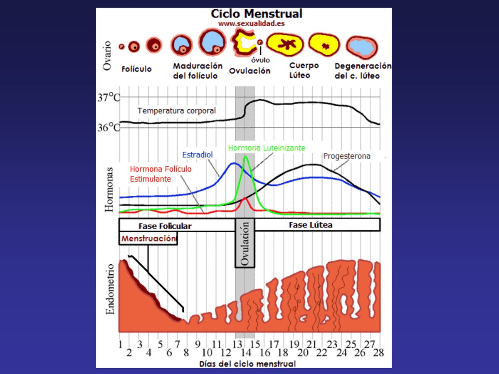
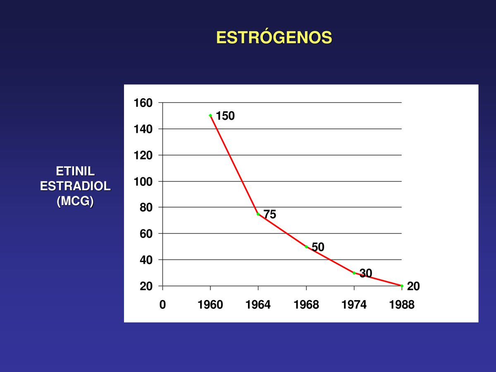
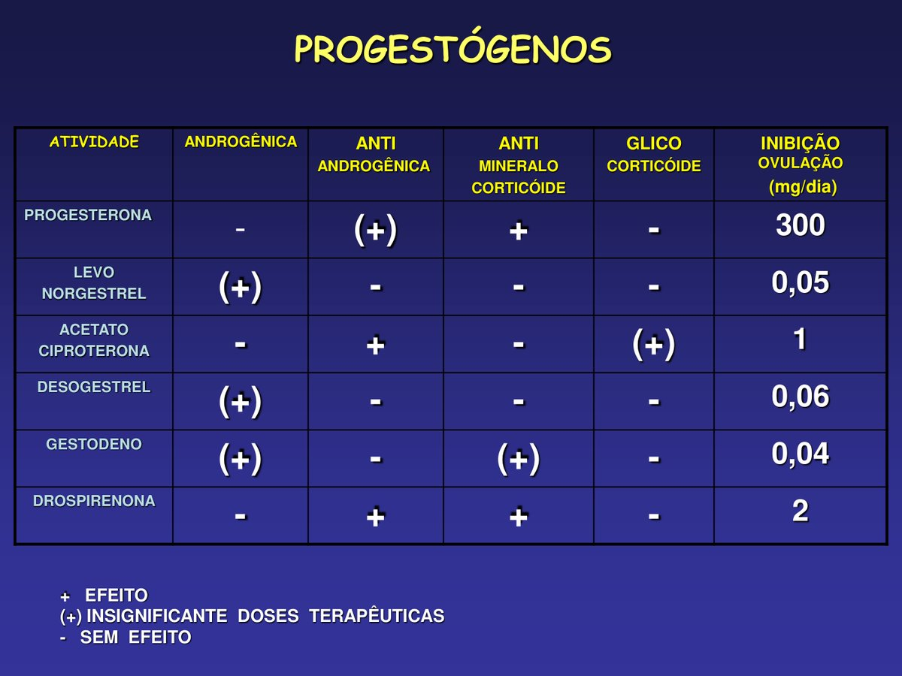
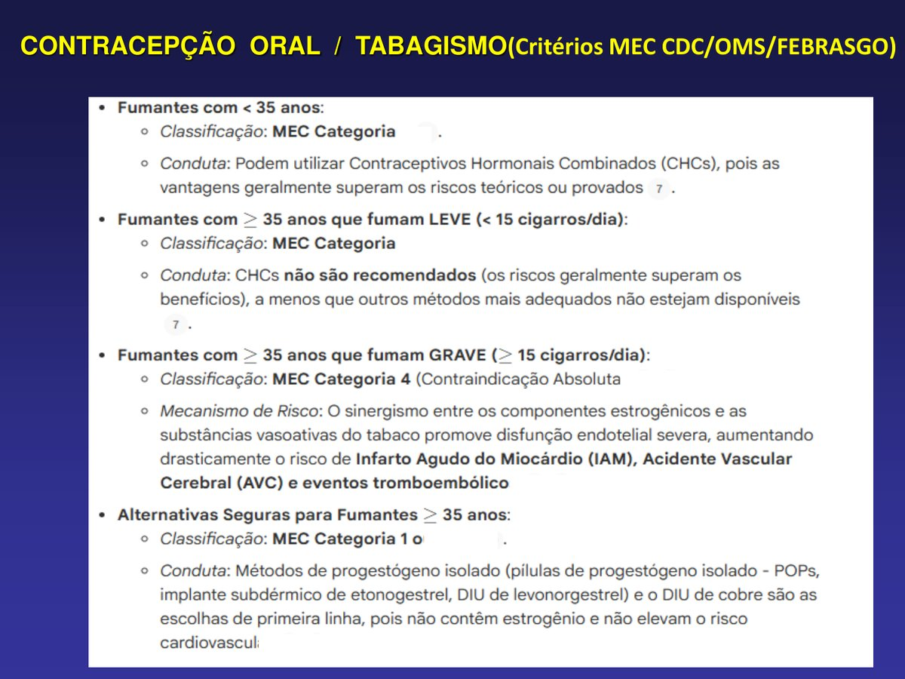
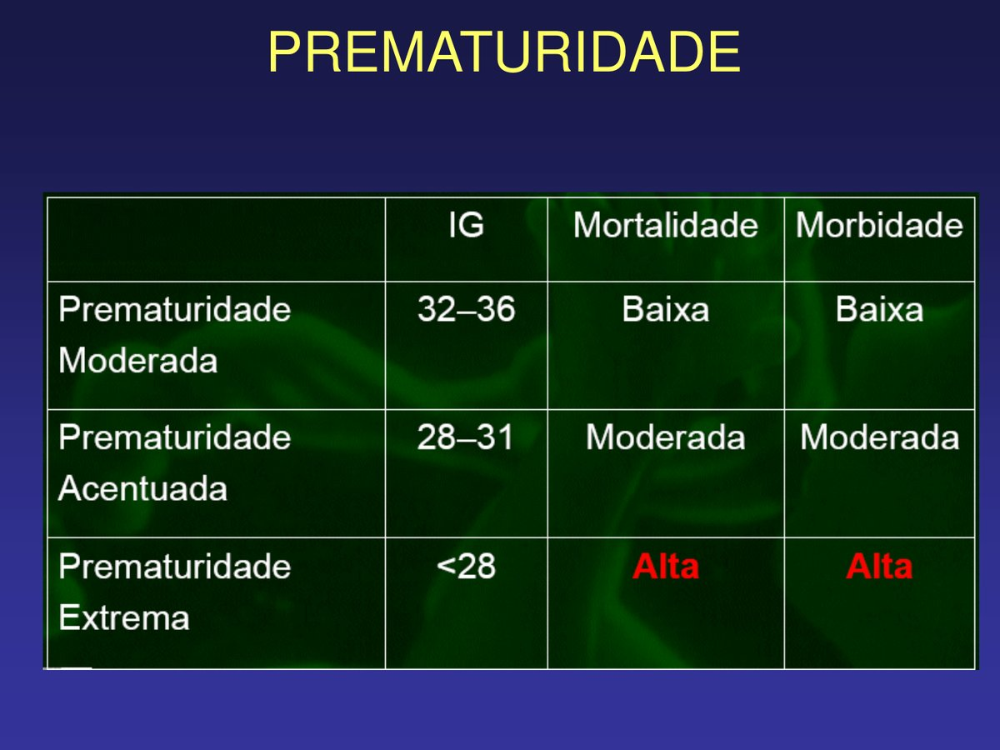
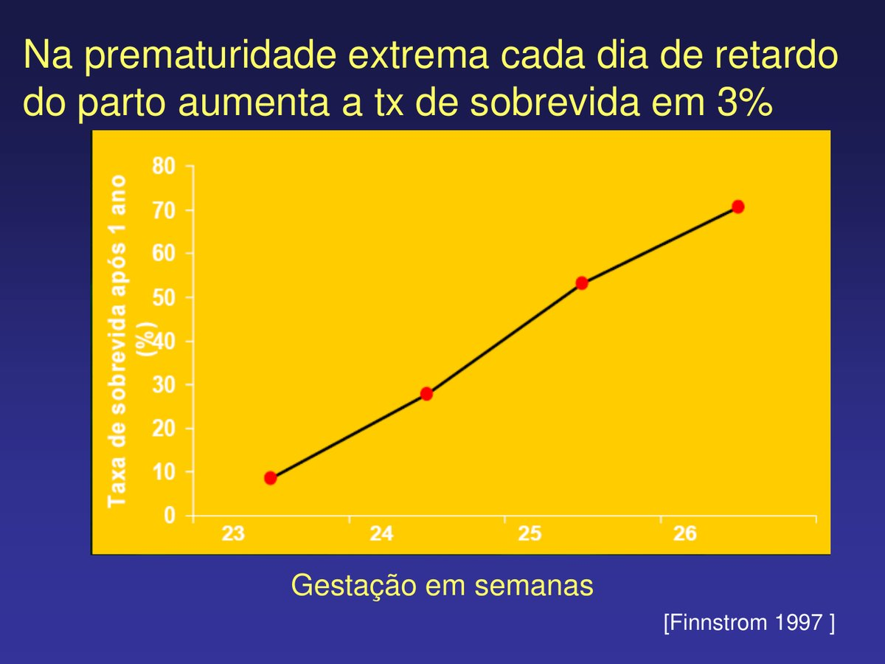

Córtex Estudos · 4º Semestre · Farmaco II · Aula 06
Contraceptivos e Fármacos Uterinos
Três blocos numa aula só: a contracepção hormonal do zero (fisiologia do ciclo, formulações, gerações de progestógenos, riscos e critérios MEC, regras de esquecimento, pílula do dia seguinte) — e a farmacologia obstétrica que a acompanha: tocólise do trabalho de parto prematuro (nifedipina, terbutalina, atosiban) e uterotônicos na hemorragia pós-parto (ocitocina, misoprostol, o esquema FEBRASGO).
1 · Fisiologia do ciclo: o eixo que a pílula desliga
Toda a contracepção hormonal é uma manipulação do eixo hipotálamo–hipófise–ovário. Entendeu o eixo, "boa parte da aula já foi embora":
O eixo e o ciclo de 28 dias
- 1GnRH (hipotálamo) → FSH e LH (hipófise anterior) — as gonadotrofinas agem sobre os ovários.
- 2FSH — estimula o desenvolvimento do folículo principal e controla a secreção de ESTROGÊNIO.
- 3LH — seu pico no meio do ciclo dispara a OVULAÇÃO; depois estimula o corpo lúteo a secretar PROGESTERONA.
- 4Estrogênio = fase PROLIFERATIVA · Progesterona = fase SECRETÓRIA — o estrogênio constrói o endométrio; a progesterona o mantém. Ambos fazem FEEDBACK NEGATIVO sobre hipotálamo e hipófise.
- Se o óvulo fertilizado implanta (nidação): o corpo lúteo continua secretando progesterona — o endométrio não descama (sem menstruação) e o eixo permanece freado (sem nova ovulação: seria "contraproducente engravidar grávida"). A prolactina da amamentação exerce freio parecido.
- Se não implanta: a progesterona cai, o endométrio perde o sustento e descama — menstruação. É exatamente essa queda que a pausa de 7 dias da cartela reproduz: 21 dias de hormônio mantêm o endométrio; na pausa os hormônios são rapidamente metabolizados e a mulher menstrua (~2 dias após o fim da cartela).
- Grávida não menstrua — "menstruou até o quinto mês" foi hemorragia vaginal, não menstruação: se o endométrio tivesse descamado, teria abortado. E a temperatura corporal sobe no período fértil (base dos métodos "naturais" de tabelinha/temperatura).

2 · História e panorama das formulações
- Linha do tempo: 1903, Fraenkel descreve a função progestacional → 1934, Butenandt caracteriza a progesterona → 1938, síntese do etinilestradiol → 1957, trabalhos clínicos de Pincus e Rock → 11/05/1960, o FDA libera o Enovid®, o primeiro contraceptivo oral: mestranol 150 mcg + noretinodrel 9,85 mg — doses altíssimas, especialmente de estrogênio.
- Combinações: estrogênio + progestógeno (combinada) ou progestógeno isolado (minipílula/POP). Não existe contraceptivo só de estrogênio — o motivo é o tromboembolismo (tópico 5).
- Combinadas orais: monofásica (mesma dose do dia 1 ao 21 — a mais usada), bifásica e trifásica (2–3 níveis, tentando mimetizar as oscilações do ciclo; indicações específicas). Além delas: pílula mensal, minipílula e minipílula anovulatória.
- Vias: oral (convencional e de emergência), injetável (inclusive o depósito trimestral de medroxiprogesterona — DMPA), transdérmica, vaginal, implantes (Implanon, só progestógeno) e o DIU hormonal (Mirena: efeito físico do dispositivo + progestógeno local — os modernos dão amenorreia por até 8 anos). O DIU de cobre é outro mecanismo: efeito físico + íons de cobre alterando o muco e a vitalidade do espermatozoide.
- A grande evolução foi reduzir dose: etinilestradiol de 150 mcg (1960) → 50 (1968) → 30 (1973) → 20 (1992) → 15 mcg (1999). Classificação atual: alta dose ≥50 mcg (não se usa mais) · baixa 35/30/20 · ultrabaixa 15. Três avanços permitiram isso: doses menores, progestógenos mais seletivos e novas formas de administração.

3 · Como a pílula funciona — e quanto falha
Mecanismo de ação quádruplo
- 1ANOVULAÇÃO — o feedback contínuo bloqueia o eixo hipotálamo-hipófise: sem pico de LH, sem ovulação. É o mecanismo central.
- 2MUCO CERVICAL — a progesterona o torna espesso e viscoso, hostil à passagem do espermatozoide (é assim que o Mirena age localmente).
- 3ENDOMÉTRIO — modificado, desfavorável à implantação.
- 4MOTILIDADE TUBÁRIA — diminuída, atrapalhando o transporte do óvulo.
- Eficácia (índice de Pearl): teórica de 0,3–0,7 falhas/100 mulheres-ano (ordem de "uma em mil"); em uso típico, 5–8/100 no primeiro ano. A diferença é humana, não farmacológica: esquecimento é a maior causa de falha, seguido de horários irregulares e interações medicamentosas.
- É o método reversível mais utilizado no mundo.
- Benefícios além da contracepção: controle do ciclo, menos cistos ovarianos, menos doença inflamatória pélvica, melhora do perfil lipoproteico, alguma proteção contra câncer (dado questionável), controle de sintomas climatéricos e da osteoporose (aí no contexto de reposição pós-menopausa).
🎯 A lição da "cardioproteção" que não era
Como o estrogênio melhora o HDL, propôs-se há ~30 anos a reposição hormonal pós-menopausa como cardioproteção (a mulher 10 anos pós-menopausa se equipara ao homem em risco cardiovascular). A indústria abraçou, vendeu — e 20 anos depois os estudos mostraram que não cardioprotege nada. Hoje a reposição existe, mas para sintomas do climatério e qualidade de vida, sem a promessa cardiovascular. Moral do professor: a indústria investe no que dá dinheiro — leia a evidência, não o marketing.
4 · Progestógenos: gerações e seletividade
- Derivados da 17α-hidroxiprogesterona: acetilados — acetato de medroxiprogesterona (o injetável de depósito), de ciproterona, de megestrol, de clormadinona; não acetilado — didrogesterona.
- Derivados da 19-nortestosterona (a progesterona também é precursora da testosterona): 1ª geração noretisterona · 2ª levonorgestrel, norgestrel · 3ª desogestrel, gestodeno, norgestimato. E o derivado da espironolactona: drospirenona.
- O que significa "geração"? Seletividade. O índice de seletividade é a relação entre a afinidade pelo receptor de progesterona e pelo de androgênio: desogestrel 40, gestodeno 26, levonorgestrel 8,8, noretisterona 5. Os de 1ª geração, pouco seletivos, também estimulavam receptores de testosterona → efeitos androgênicos na mulher: hirsutismo, acne, ganho de massa, alterações de caracteres sexuais. Quanto maior a seletividade, menos "efeito masculinizante".
- Dois progestógenos com "superpoderes" (cai em prova): acetato de ciproterona — tem ação ANTIandrogênica: já foi usado até no câncer de próstata (o eixo GnRH→LH→testosterona é igual em homens; frear androgênio serve dos dois lados); drospirenona — herda da espironolactona a ação ANTImineralocorticoide (bloqueia aldosterona): não retém líquido, tendendo a neutra/favorável na pressão. "Qual seria ideal para a hipertensa com hiperaldosteronismo?" — a pergunta de prova que o professor anunciou.
- Detalhe da tabela: efeitos marcados como "(+)" são insignificantes em dose terapêutica — só aparecem em dose alta (ex.: a androgenicidade do desogestrel).

5 · O problema do estrogênio: coagulação e os números do TEV
Por que não existe pílula só de estrogênio? Porque na hemostasia "o estrogênio zoa tudo" — ele é o principal responsável pela hipercoagulabilidade dos combinados:
O estrogênio na cascata de coagulação
- 1AUMENTA os fatores II, V, VII, IX, X e XII — mais matéria-prima para coagular.
- 2DIMINUI a antitrombina III — tira o freio anticoagulante natural.
- 3AUMENTA tromboxano A2 e DIMINUI prostaciclina — mais agregação plaquetária e vasoconstrição, menos vasodilatação.
- 4AUMENTA número, adesividade e agregação das plaquetas — o pacote completo pró-trombótico.
- O paradoxo: no perfil lipídico o estrogênio é "cardioprotetor" (aumenta síntese e reduz catabolismo do HDL) — mas o ganho lipídico não compensa o risco trombótico do uso contínuo.
- Os números que caem em prova (CDC 2024): TEV em mulheres saudáveis não usuárias: 1–5/10.000 mulheres-ano · usuárias de combinado (<50 mcg): 3–9 (até 12)/10.000 · gestantes: 10–20/10.000 · puerpério imediato (6 semanas): 40–65/10.000. Conclusão didática: o risco da pílula é substancialmente menor que o da gravidez — e muito menor que o do puerpério. Para quem tem risco, engravidar sem planejamento é o pior cenário (e a gestante de risco faz profilaxia com enoxaparina no pré-natal).
⚠️ Quem prescreve contraceptivo é o ginecologista
"Não é a Titi, a Marie Claire nem o TikTok" — nem a amiga que "toma um ótimo". A prescrição exige avaliar fatores de risco para tromboembolismo: histórico familiar, varizes, exame de membros inferiores, edema, e na dúvida Doppler venoso e laboratório. A "atleta de 19 anos que trombosou com pílula" do noticiário quase sempre é a mulher que já tinha fator de risco não rastreado.
6 · Segurança por sistema: lipídios, glicose, pressão e peso
| Sistema | Estrogênio | Progestógenos |
|---|---|---|
| Lipídios | "Cardioprotetor" no HDL (↑síntese, ↓catabolismo) | Os androgênicos clássicos pioram o perfil; os de 3ª geração e a drospirenona minimizam a interferência |
| Glicose | Baixas doses: impacto clínico mínimo; DM descompensado ou vasculopatia = contraindicado | Os de maior atividade androgênica induzem resistência periférica à insulina (↓receptores + defeito pós-receptor) |
| Pressão | HAS grave (≥160×100): MEC 4 — risco inaceitável de AVC/IAM; leve-moderada: MEC 3 | Antimineralocorticoides (drospirenona, gestodeno) neutros/favoráveis; POPs, implantes e DIU-LNG = MEC 2 mesmo na HAS grave (ressalva: DMPA = MEC 3) |
| Sódio/peso | Retém sódio | Eliminam (especialmente os antimineralocorticoides); em altas doses os androgênicos têm ação anabolizante |
- Diabetes de longa data: DM >20 anos ou com nefro/retino/neuropatia → combinados com estrogênio = MEC 3 ou 4; métodos de progestógeno isolado = MEC 2 (OMS 2025).
- Efeitos colaterais por componente (o quadro que "parece síndrome de Cushing" de tão amplo): estrogênio — cefaleia, náuseas/vômitos, tonturas, irritabilidade, ganho de peso, ingurgitação venosa, mastalgia, cloasma; progestógeno — fadiga, depressão, alteração de libido, hipo/amenorreia, acne, ↑apetite, hirsutismo, seborreia, queda de cabelo. Nenhuma mulher tem tudo, mas é por isso que muitas não se adaptam e trocam de método.
7 · Critérios MEC e contraindicações (o caso do tabagismo)
O MEC (critérios de elegibilidade CDC/OMS/FEBRASGO) tem 4 categorias: 1 = usa sem restrição · 2 = usa (vantagens superam riscos) · 3 = via de regra não usa (riscos geralmente superam) · 4 = contraindicação absoluta.
- Contraindicações ABSOLUTAS do combinado: neoplasia hormônio-dependente (câncer de mama!), tromboflebite/doença tromboembólica, doença coronariana ou cerebrovascular, sangramento uterino sem diagnóstico, gravidez, HAS grave (≥160×100), diabetes insulino-dependente grave, tabagista acima de 35 anos, hepatopatia aguda ou crônica.
- Relativas: fatores de risco para TEV, doença da vesícula biliar, cefaleia, epilepsia/psicoses/neuroses, HAS leve-moderada, insuficiência renal/cardíaca, diabetes, uso de medicamentos (interações — tópico 8).
- Tabagismo, o exemplo-mestre: fumante <35 anos → MEC 2 (pode usar combinado) · ≥35 anos fumando leve (<15 cig/dia) → MEC 3 · ≥35 anos fumando ≥15 cig/dia → MEC 4, absoluta. Mecanismo: sinergismo do estrogênio com as substâncias vasoativas do tabaco → disfunção endotelial severa → IAM, AVC, TEV. Alternativas seguras (MEC 1–2): progestógeno isolado (POP), implante de etonogestrel, DIU de levonorgestrel ou DIU de cobre — nenhum leva estrogênio.

8 · Aspectos práticos: interações e regras de esquecimento
- Anticonvulsivantes indutores do citocromo P450 (fenitoína, carbamazepina, fenobarbital): aceleram o metabolismo hepático do contraceptivo e reduzem drasticamente a eficácia de pílulas combinadas E de progestógeno isolado (MEC 3). Não afetam o DMPA (MEC 1) nem os DIUs — a via de depósito/local escapa do fígado. É a saída para a epiléptica.
- A dupla armadilha da epilepsia: os anticonvulsivantes clássicos são teratogênicos E derrubam o contraceptivo — ou seja, a mulher que mais precisaria não engravidar é a que mais engravida por falha. A crise convulsiva na gestação tem alto risco de morte materno-fetal. Conduta: informar dos riscos (a decisão é dela), preferir métodos não orais (DMPA, DIU) e, se deseja engravidar, a oxcarbazepina é o anticonvulsivante de menor teratogenicidade em idade fértil.
- Antibióticos: a diretriz MUDOU. CDC 2024/OMS 2025: antibiótico de largo espectro (penicilinas, tetraciclinas) + contraceptivo oral = MEC 1, sem restrição — caiu a velha orientação de barreira por 4 semanas (a suposta interferência via microbiota/circulação êntero-hepática não se confirmou).
- Regras de esquecimento (combinadas): atraso <12 h não interfere. São necessários 7 dias de uso para bloquear o eixo — por isso o esquecimento mais perigoso é na 1ª semana. Esqueceu 1 comprimido: 1ª semana → toma o esquecido + contracepção adicional (barreira) + termina a cartela · 2ª semana → toma o esquecido e termina a cartela (sem barreira) · 3ª semana → toma o esquecido e termina a cartela, e escolhe: emendar a próxima sem pausa OU suspender, fazer os 7 dias de intervalo (menstrua) e iniciar nova cartela.
9 · Pílula do dia seguinte
- O que é: contracepção de emergência — doses altíssimas de hormônio (hoje, levonorgestrel; o Postinor custa ~R$ 14) que provocam uma perturbação hormonal grande o suficiente para impedir a nidação (e descamar o endométrio).
- Janela: ideal até 12 h após a relação desprotegida; de 12–24 h a efetividade já cai bastante; após ~5 dias, praticamente sem efeito.
- É abortiva? Depende da definição do início da vida. Para a OMS/MS, aborto é interrupção APÓS a nidação (e ~20% das fecundações não nidam naturalmente) — logo, impedir nidação não é aborto. Para religiões que consideram a vida a partir da fusão dos núcleos, é. E há a zona cinzenta real: se a nidação já ocorreu e a perturbação hormonal descamar o endométrio, aí seria abortiva — e não há como saber. Por isso a resposta honesta é "depende do momento e da definição".
- Uso repetido é o grande problema: foi criada para o acidente raro (violência sexual, ruptura do preservativo) — usada mês sim, mês também, é nociva à saúde da mulher (pense: uma bomba hormonal por ciclo, em quem pode ser diabética, ter risco trombótico…). Desaconselhar pelo lado da educação em saúde, nunca do julgamento.
- Direito garantido por lei: fornecimento gratuito e sem questionamento na UBS — dispensada pela enfermagem, sem precisar passar pelo médico.
10 · Uso contínuo: a mulher precisa menstruar?
- Fisiologicamente, não. A menstruação é o "plano B" de um ciclo que existia para engravidar sempre. Desde que a contracepção hormonal contínua existe (>20 anos de amenorreia induzida), nenhum malefício foi demonstrado — há efeitos indesejados como qualquer fármaco, mas não um dano da amenorreia em si.
- Como se faz: cartelas contínuas sem pausa, injetável, implante ou DIU hormonal (Mirena) — os modernos mantêm amenorreia por até 8 anos. A fertilidade após parar é variável: tem mulher que engravida no primeiro ciclo, tem a que demora.
- Escape (spotting): sangramento intermédio, comum com doses baixas e métodos só de progestógeno (o estrogênio endógeno segue existindo) — "escapezinho não é menstruação". E 20–25% das mulheres não respondem bem a implantes — por isso a orientação de manter barreira no início e observar.
- O contexto cultural importa (religiões que consideram a mulher "impura" no período, o judaísmo ortodoxo, o islã) — o médico respeita e informa, não impõe.
11 · Prematuridade: definições e fatores de risco
- Definições (decoreba obrigatória): prematuro/pré-termo = nascido com <37 semanas (259 dias) da última menstruação, independente do peso (FIGO 1977 — a definição antiga de Ylppö, 1919, era peso <2.500 g); RCIU = feto abaixo do percentil 10 para a idade gestacional; aborto (OMS) = eliminação do concepto com <20–22 semanas ou <500 g; termo = 37 a 41 semanas e 6 dias.
- Classes de prematuridade: moderada 32–36 sem (morbimortalidade baixa) · acentuada 28–31 (moderada) · extrema <28 (alta/alta).
- Incidência: 5–8% nos países desenvolvidos; Brasil ~11% (Sudeste ~12%). Importa porque: incidência elevada + morboletalidade neonatal + custo (um dia de UTI neonatal é uma fortuna) + possibilidade de prevenção — e a melhor prevenção é o PRÉ-NATAL (a lógica do investimento público: prevenir é mais barato que tratar, a mesma do kit de redução de danos e do preservativo gratuito).
- Fatores de risco — demográficos: idade <20 e >40, raça negra, baixa condição socioeconômica, solteiras, estatura <1,50 m/peso <45 kg; comportamentais: fumo, drogas (RN nasce em abstinência — em todas as classes sociais), má nutrição, atividade física excessiva (hipertrofia do reto abdominal → restrição de crescimento); pré-gestacionais: intervalo interpartal curto ("escadinha"), prematuro/aborto tardio prévio, malformações uterinas (bicorno, didelfo, septado, incompetência istmo-cervical), hipertensão, diabetes, colagenoses, nefropatias; obstétricos: gestação múltipla, anomalias do líquido amniótico, sangramentos, rotura prematura de membranas, malformações e infecções congênitas, iatrogenia (fármacos!).
- O número que justifica tudo: na prematuridade extrema, cada dia a mais dentro do útero aumenta a sobrevida em ~3% (Finnström, 1997).


12 · Tocólise: ganhar 48 horas
O objetivo da tocólise é CURTO (MS – Gestação de Alto Risco 2022; FEBRASGO 29/2018 e 32/2021): ela não leva a gestação ao termo — ela ganha 48 horas para ① fazer corticoide (maturação pulmonar fetal), ② sulfato de magnésio para neuroproteção fetal e ③ transferir a gestante para um centro com UTI neonatal. A maioria dos uterolíticos segura o parto por 48–72 h; nenhum esquema reduz a incidência de prematuridade; a terapia para quando o útero entra em quiescência; reiniciar no máximo 2 vezes; uterolítico oral prolongado não funciona.
- Condições para tocólise: período de latência (dilatação cervical <3 cm), esvaecimento não pronunciado, idade gestacional 22–34 semanas, ausência de contraindicações.
- Contraindicações (não segurar o que precisa nascer — ou já morreu): morte fetal (com a ressalva humana: se a mãe quer esperar alguém chegar, respeita-se), sofrimento fetal, malformações graves, RCIU, rotura prematura de membranas, síndromes hemorrágicas, síndromes hipertensivas graves, DM insulino-dependente instável.
| Uterolítico | Mecanismo | Esquema / observações | Cuidados |
|---|---|---|---|
| NIFEDIPINA — 1ª escolha (SUS/FEBRASGO) | Bloqueador de canal de cálcio (di-hidropiridínico) | Ataque 20 mg VO (+20 mg após 30 min se persistir); manutenção 20 mg 6/6 h por 48 h. Mais eficaz e com menos efeitos colaterais | CI: hipotensão, cardiopatia materna |
| TERBUTALINA (β2-agonista) — 2ª escolha | β2 no miométrio → ↓Ca²⁺ livre → relaxamento (o único β-agonista EV; grupo: salbutamol, fenoterol, ritodrina) | 5 ampolas de 0,25 mg em 500 mL SG5% EV em bomba, máx. 48 h | Taquicardia materna E fetal, hipotensão, HIPERglicemia (↓secreção de insulina), arritmias, dispneia, tremor. CI: cardiopatia, hipertireoidismo, infecção grave, HAS grave, DM descompensado |
| ATOSIBAN | Antagonista competitivo do receptor de ocitocina no miométrio | Bolus 6,75 mg EV + infusão; tão eficaz quanto a nifedipina, mínimos efeitos colaterais, adia o TPP por até 2 semanas | O problema é o CUSTO — não está no SUS |
| SULFATO DE MAGNÉSIO | Cátion bivalente antagonista do cálcio na fibra | Ataque 4 g EV; manutenção 1–2 g/h. Hoje o papel principal é NEUROPROTEÇÃO fetal | Monitorar FR, reflexo patelar, diurese, magnesemia |
| INDOMETACINA (AINE) | Inibe a ciclooxigenase → sem prostaglandinas contráteis | 100 mg retal + 25 mg VO 6/6 h, máx. 48 h, só até 31–32 semanas | Fechamento precoce do ducto arterioso + oligodrâmnio (↓fluxo renal fetal), irritação gástrica. CI: síndrome hipertensiva, gastrite, IG >31 sem |
| NITROGLICERINA transdérmica | Doador de óxido nítrico → relaxa via quinase da cadeia leve de miosina | Alternativa; sem relatos de efeito fetal/neonatal | Hipotensão materna, tontura, palpitação |
🎯 O ducto arterioso liga esta aula à circulação fetal
O feto não respira: o sangue desvia dos pulmões pelo forame oval e pelo ducto arterioso — que a prostaglandina mantém aberto. AINE na gestação inibe prostaglandina → fecha o ducto antes da hora → sobrecarrega a pequena circulação. O mesmo raciocínio ao contrário: no RN com o ducto que não fecha (persistência), usa-se inibidor de prostaglandina para fechá-lo; e quando se PRECISA do ducto aberto (cardiopatias ducto-dependentes), usa-se análogo de prostaglandina (Prostin).
13 · Uterotônicos e a hemorragia pós-parto
O oposto da tocólise: fazer o útero contrair. Indicações atuais (MS/FEBRASGO 2022–2023): prevenção e tratamento da hemorragia pós-parto (HPP) por atonia uterina — o útero que não contrai depois da dequitação não comprime os vasos e sangra.
- OCITOCINA: polipeptídeo dos núcleos paraventricular e supraóptico do hipotálamo, armazenado na neuro-hipófise (extratos de hipófise usados desde 1901!). Duas ações: contração uterina + ejeção do leite. Extra-uterinas: relaxa musculatura lisa vascular, ação antidiurética em dose alta → hiponatremia e edema pulmonar. Doses: 10 UI IM / 5 UI EV bolus / 20–30 UI em 500 mL SG5%. Termolábil — precisa de geladeira.
- Amamentação, o par ocitocina × prolactina: leite "empedrado" = os ductos estão CHEIOS — falta ejeção (ocitocina), não produção; trata com ocitocina (spray, quando disponível). Falta de produção = prolactina baixa → trata com METOCLOPRAMIDA (Plasil): bloqueia receptores D2, e como a dopamina inibe a prolactina, bloquear dopamina = ↑prolactina = ↑leite. (Antipsicóticos de 1ª geração fariam o mesmo — com efeitos demais.)
- CARBETOCINA: análogo sintético da ocitocina, termoestável (dispensa geladeira), no SUS desde 2022 para prevenção de HPP: 100 mcg IM/EV lento, dose única pós-parto; preferida na cesárea e no alto risco de HPP. CI: cardiopatia grave, eclâmpsia.
- MISOPROSTOL (Citotec): análogo estável da prostaglandina E1, criado como citoprotetor gástrico (nunca usado para isso). Dupla face: no início da gestação é abortivo (contrai o útero e descola o endométrio implantado) — por isso é droga de uso hospitalar com controle rígido (comprimido barato, ~R$ 60 a caixa; no mercado ilegal, R$ 700–800 por 4 comprimidos, 2 VO + 2 vaginais). No fim da gestação, previne/trata HPP após parto vaginal (menos efetivo que ocitocina). Efeitos: calafrio, febre, cólica, náusea. Clínica real: jovem com hemorragia vaginal "não sei se estou grávida" — pensar em aborto provocado; com viabilidade fetal, bloquear a contração; sem viabilidade, curetagem.
- METILERGONOVINA (metilergometrina): alcaloide do ergot, vasoconstritor (parente dos antigos antienxaquecosos) que contrai o miométrio; 0,25 mg IM. Menos efetiva que o misoprostol. CI: HIPERTENSÃO (vasoespasmo) e hipersensibilidade.
HPP por atonia — a sequência FEBRASGO
- 1Ocitocina 10 UI IM/EV — primeiro passo, sempre.
- 2Não resolveu em 2–3 min: metilergometrina 0,2 mg IM — SE a paciente não for hipertensa.
- 3Não resolveu: misoprostol 800 mcg retal/sublingual — e valem as associações (ocitocina + miso ou ocitocina + metilergometrina).
- 4Refratária: ácido tranexâmico 1 g EV em 10 min — não é uterotônico: é ANTIFIBRINOLÍTICO (estabiliza o coágulo), parte do pacote até 3 h pós-parto — junto das medidas cirúrgicas. (O mesmo usado no fluxo menstrual hemorrágico.)
✅ Resumo rápido da aula
- Eixo: GnRH → FSH (folículo/estrogênio) + LH (ovulação/progesterona); estrogênio = proliferativa, progesterona = secretória; feedback negativo = o mecanismo da pílula (anovulação + muco + endométrio + tuba).
- Não existe pílula só de estrogênio: ele ↑fatores de coagulação, ↓antitrombina III, ↑TXA2/plaquetas. TEV: 1–5 (ninguém) → 3–9 (pílula) → 10–20 (grávida) → 40–65 (puerpério) /10.000 — pílula < gravidez.
- Progestógenos: geração = seletividade (desogestrel 40 > gestodeno 26 > levonorgestrel 8,8 > noretisterona 5); ciproterona = ANTIandrogênica; drospirenona = ANTImineralocorticoide (a da hipertensa).
- MEC: tabagista ≥35 anos ≥15 cig = MEC 4; HAS grave + estrogênio = MEC 4; saída sempre: progestógeno isolado/implante/DIU. DMPA é a exceção metabólica (MEC 3 em trombofilia e HAS grave).
- Práticos: anticonvulsivantes indutores derrubam COC/POP (MEC 3) mas não DMPA/DIU; antibiótico = MEC 1 (diretriz nova); esquecimento <12 h ok; 1ª semana = a perigosa (7 dias pra bloquear o eixo).
- Dia seguinte: ideal <12 h; impede nidação; OMS: aborto só após nidação; o problema é o uso repetido; fornecimento gratuito por lei.
- Prematuro: <37 sem independe do peso; aborto OMS <20–22 sem/<500 g; extrema <28 sem; cada dia = +3% sobrevida.
- Tocólise = 48 h pra corticoide (pulmão) + MgSO₄ (neuroproteção) + transferência; nifedipina 1ª escolha; terbutalina 2ª; atosiban ótimo e caro; indometacina fecha ducto arterioso (<32 sem). Não inibir: morte/sofrimento fetal, RPM, hemorragia.
- HPP por atonia: ocitocina → metilergometrina (não hipertensa) → misoprostol 800 mcg → ácido tranexâmico (antifibrinolítico). Carbetocina termoestável previne (SUS 2022). Misoprostol = Citotec, abortivo no início da gestação, controle hospitalar. Leite: sem ejeção = ocitocina; sem produção = metoclopramida (↑prolactina via bloqueio D2).
Fontes: transcrição integral da aula 06 + slides da disciplina (critérios CDC 2024/OMS 2025, diretrizes MS 2022 e FEBRASGO); Rang & Dale, Farmacologia.
💊 Resumão Pré-Prova — Contraceptivos e Fármacos Uterinos
Revisão da véspera · Farmaco II · Aula 06 · só o que foi enfatizado
- Eixo: GnRH → hipófise anterior → FSH (folículo + secreção de ESTROGÊNIO) e LH (pico = OVULAÇÃO; corpo lúteo → PROGESTERONA).
- Estrogênio = fase PROLIFERATIVA · Progesterona = fase SECRETÓRIA (constrói × mantém o endométrio). Ambos = feedback NEGATIVO no eixo.
- Nidação: corpo lúteo segue produzindo progesterona → sem menstruação e sem nova ovulação. Sem nidação: progesterona cai → descama → menstrua (= a pausa de 7 dias da cartela).
- Mecanismo quádruplo da pílula: ANOVULAÇÃO (bloqueio do eixo) + MUCO cervical espesso + ENDOMÉTRIO desfavorável + ↓MOTILIDADE tubária.
- Pearl: teórico 0,3–0,7/100 mulheres-ano · uso típico 5–8/100 · maior causa de falha = ESQUECIMENTO.
- 1960 — Enovid (FDA): mestranol 150 mcg; hoje etinilestradiol 15–20 mcg (10% da dose). Alta dose ≥50 · baixa 35/30/20 · ultrabaixa 15 mcg.
- NÃO existe pílula só de estrogênio (tromboembolismo). Combinada (E+P) mono/bi/trifásica ou progestógeno isolado (POP/minipílula).
- Vias: oral, injetável (DMPA trimestral), transdérmica, vaginal, implante (Implanon), DIU hormonal (Mirena — amenorreia até 8 anos) e DIU de cobre (físico + íons alteram muco).
- Problema da dose baixa: escape (hemorragia intermédia) + menor margem pra esquecimento; 20–25% não respondem bem a implantes.
| Progestógeno | Marca registrada | Índice de seletividade |
|---|---|---|
| Noretisterona (1ª geração) | Androgênica (hirsutismo, acne) | 5 |
| Levonorgestrel (2ª) | Padrão; androgenicidade insignificante | 8,8 |
| Desogestrel/Gestodeno (3ª) | Alta seletividade, menor impacto lipídico | 40 / 26 |
| Ciproterona (17α-OH) | ANTIandrogênica (já usada em CA de próstata) | — |
| Drospirenona (espironolactona) | ANTIandrogênica + ANTImineralocorticoide → a da hipertensa/hiperaldosteronismo (pergunta de prova!) | — |
- Geração = seletividade receptor de progesterona ÷ receptor de androgênio. Baixa seletividade = efeito androgênico/masculinizante + resistência insulínica.
- Estrogênio na hemostasia: ↑fatores II V VII IX X XII · ↓ANTITROMBINA III · ↑tromboxano A2 · ↓prostaciclina · ↑plaquetas. Paradoxo: melhora HDL, mas trombosa.
- TEV /10.000 mulheres-ano: não usuária 1–5 → usuária 3–9 (12) → GRÁVIDA 10–20 → PUERPÉRIO 40–65. Pílula < gravidez — conclusão didática.
- MEC: 1 usa · 2 usa · 3 via de regra não · 4 NUNCA.
- Tabagismo: <35a = MEC 2 · ≥35a leve (<15 cig) = MEC 3 · ≥35a ≥15 cig = MEC 4. Saída: POP, implante, DIU-LNG, DIU cobre (sem estrogênio).
- HAS grave (≥160×100): estrogênio MEC 4; POP/implante/DIU-LNG MEC 2; exceção DMPA = MEC 3.
- DM >20 anos ou com nefro/retino/neuropatia: combinado MEC 3–4; isolado MEC 2.
- DMPA (depósito): a exceção metabólica — TEV 2–3×, MEC 3 em trombofilia/TEV prévio e na HAS grave. Demais isolados (POP, drospirenona 4 mg, implante, DIU-LNG) = MEC 2 até em trombofilia.
- Absolutas do combinado: CA hormônio-dependente, TEV/tromboflebite, coronariopatia/AVC, sangramento sem diagnóstico, gravidez, HAS grave, DM grave, tabagista >35a, hepatopatia.
- Quem prescreve = GINECOLOGISTA (avaliar risco de TEV: família, varizes, MMII) — "não é o TikTok". Gestante de risco: enoxaparina no pré-natal.
- Anticonvulsivantes indutores do CYP450 (fenitoína, carbamazepina, fenobarbital): derrubam COC e POP (MEC 3); não afetam DMPA (MEC 1) nem DIU. Epilepsia = dupla armadilha (teratogênico + falha); oxcarbazepina = menos teratogênica.
- Antibiótico + pílula = MEC 1 (CDC 2024/OMS 2025) — caiu a barreira de 4 semanas. Diretriz NOVA, adore-a.
- Esquecimento: atraso <12 h não interfere; 7 dias de uso para bloquear o eixo → 1ª semana é a perigosa. 1ª sem: toma + BARREIRA + termina · 2ª: toma e termina · 3ª: toma, termina e EMENDA sem pausa (ou pausa 7 dias e recomeça).
- Pílula do dia seguinte: dose altíssima (levonorgestrel); ideal <12 h, cai até ~5 dias; impede NIDAÇÃO. OMS/MS: aborto = só APÓS nidação (~20% das fecundações não nidam). Problema = uso repetido (nocivo). Lei: gratuita na UBS, sem receita.
- Uso contínuo/amenorreia: sem malefício demonstrado em >20 anos; a mulher NÃO precisa menstruar; fertilidade pós-parada variável.
- Definições: prematuro <37 sem (259 dias) INDEPENDE do peso (FIGO 77) · RCIU < percentil 10 · aborto (OMS) <20–22 sem ou <500 g · termo 37–41+6.
- Classes: moderada 32–36 · acentuada 28–31 · EXTREMA <28 (alta morbimortalidade). Brasil ~11%. Cada dia ganho = +3% de sobrevida (Finnström 97). Melhor prevenção = PRÉ-NATAL.
- Tocólise = objetivo CURTO: ganhar 48 h p/ CORTICOIDE (maturação pulmonar) + SULFATO DE Mg (neuroproteção) + transferir p/ UTI neonatal. Não leva ao termo; reinicia no máx. 2×.
- Condições: dilatação <3 cm, esvaecimento não pronunciado, IG 22–34 sem, sem CI.
- NÃO inibir: morte fetal, sofrimento fetal, malformação grave, RCIU, rotura prematura de membranas, hemorragia, sd. hipertensiva, DM instável.
| Tocolítico | Mecanismo | Chave |
|---|---|---|
| NIFEDIPINA — 1ª escolha SUS | Bloq. canal de Ca²⁺ | 20 mg VO ataque (+20 em 30 min) → 20 mg 6/6 h por 48 h; CI hipotensão/cardiopatia |
| Terbutalina (β2) — 2ª | β2 miométrio → ↓Ca²⁺ livre | EV em bomba; taquicardia materno-FETAL, HIPERglicemia, tremor; CI cardiopatia, hipertireoidismo, DM descompensado |
| Atosiban | Antagonista do receptor de OCITOCINA | = eficácia, mínimos efeitos; CARO, fora do SUS |
| Sulfato de Mg | Antagonista do Ca²⁺ (cátion bivalente) | Hoje = NEUROPROTEÇÃO; monitorar FR, reflexo patelar, diurese |
| Indometacina (AINE) | Inibe COX → ↓prostaglandinas | Só até 31–32 sem: fecha o ducto arterioso + oligodrâmnio |
| Nitroglicerina | Doador de NO | Transdérmica; hipotensão materna |
- Indicação: prevenção e tratamento da HPP por ATONIA uterina.
- Ocitocina: núcleos paraventricular + supraóptico → NEURO-hipófise; contração uterina + EJEÇÃO do leite; dose alta = antidiurética (hiponatremia, edema pulmonar); termolábil (geladeira).
- Leite: "empedrado" = falta EJEÇÃO → ocitocina · falta PRODUÇÃO = prolactina → METOCLOPRAMIDA (bloqueia D2; dopamina inibe prolactina → ↑prolactina).
- Carbetocina: análogo TERMOESTÁVEL, SUS 2022, 100 mcg dose única — PREVENÇÃO (cesárea/alto risco); CI cardiopatia grave, eclâmpsia.
- Misoprostol = Citotec: análogo de PGE1 (criado p/ úlcera, nunca usado); início da gestação = ABORTIVO (droga hospitalar controlada; caixa ~R$60, ilegal R$700+); fim = HPP 800 mcg retal/sublingual (menos efetivo que ocitocina).
- Metilergonovina: ergot, vasoconstritor; CI: HIPERTENSÃO.
- Sequência FEBRASGO da HPP: ① ocitocina 10 UI → ② (2–3 min) metilergometrina 0,2 mg IM se NÃO hipertensa → ③ misoprostol 800 mcg → ④ associações → ⑤ ÁCIDO TRANEXÂMICO 1 g EV (ANTIFIBRINOLÍTICO, não uterotônico; até 3 h) + cirurgia.
- FSH × LH: folículo/estrogênio × ovulação/progesterona (pico de LH = ovulação).
- Proliferativa × secretória: estrogênio constrói × progesterona mantém.
- Pílula × gravidez no TEV: 3–9 × 10–20 (e puerpério 40–65) — a pílula é o MENOR dos riscos.
- Ciproterona × drospirenona: ANTIandrogênica × ANTIandrogênica + ANTImineralocorticoide (pressão).
- DMPA × demais isolados: DMPA sobe TEV (MEC 3) e escapa dos indutores CYP (MEC 1!); POP/implante/DIU = seguros (MEC 2) mas caem com anticonvulsivante (MEC 3).
- Antibiótico ≠ anticonvulsivante: antibiótico NÃO derruba a pílula (MEC 1, diretriz nova); anticonvulsivante indutor DERRUBA (MEC 3).
- Tocólise × uterotônico: relaxa (segurar 48 h) × contrai (HPP). Atosiban ANTAGONIZA ocitocina; ocitocina é o 1º da HPP.
- Metilergometrina: 2º passo da HPP, mas NUNCA na hipertensa (vasoespasmo).
- Ácido tranexâmico: está no pacote da HPP mas NÃO é uterotônico — é antifibrinolítico.
- Indometacina: tocolítico eficaz, mas FECHA o ducto arterioso — nunca após 31–32 semanas.
- Ejeção × produção do leite: ocitocina × prolactina (metoclopramida sobe prolactina bloqueando dopamina).
Banco de Questões — Contraceptivos e Fármacos Uterinos
Farmaco II · Aula 06 · estilo ENADE/residência.